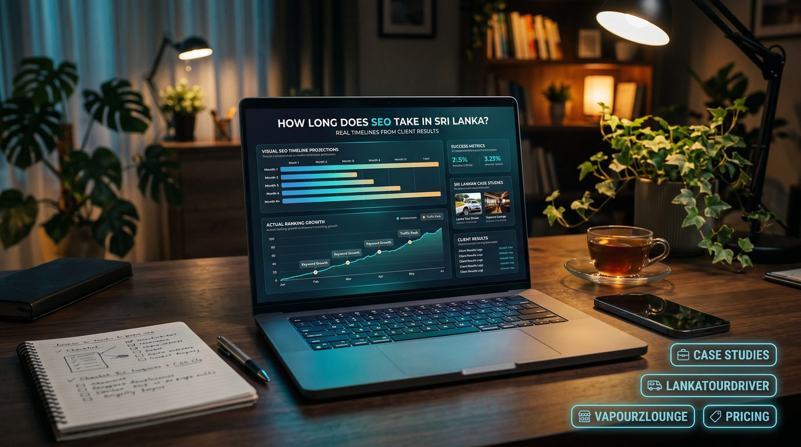

SEO usually shows early indicators within three to six months, with competitive keywords and larger business growth often taking six to twelve months or longer. Timelines depend on your starting condition, competition, keyword choice, content quality and how consistently work is implemented. Local searches can move faster than national terms, and no provider can guarantee a ranking or a deadline.
- How long does SEO take in Sri Lanka?
- SEO results timeline: what to expect month by month
- How long does SEO take for different Sri Lankan businesses?
- 7 factors that affect how quickly SEO works
- How to measure real SEO results
- Real SEO client results: how to read case studies
- How to improve your SEO progress without taking unnecessary risks
- How much should you invest in SEO while waiting for results?
- Final thoughts: set realistic SEO expectations
How long does SEO take in Sri Lanka?
For many websites, an initial indication of progress may appear within three to six months of consistent, well-targeted SEO work. More competitive keywords and substantial business growth may require six to twelve months or longer. These are planning ranges, not guarantees or deadlines.
A website with technical problems, little useful content and few relevant links may need substantial groundwork before it can compete. A well-established business with a technically sound website may see progress sooner, especially for specific local searches with limited competition.
It is also important to distinguish between ranking improvements and commercial results. A keyword moving from position 30 to position 12 is progress, but it may not yet generate many enquiries. A Google Business Profile improvement that generates qualified calls can have a more immediate business impact, even if broader organic rankings take longer.
For an overview of how SEO performance can be assessed in practice, explore our SEO case studies, and see how much SEO costs in Sri Lanka to plan the investment.
SEO results timeline: what to expect month by month
The stages below are a general framework for planning SEO work. Actual progress can be faster or slower, and the stages may overlap.
Month 1: research, auditing and fixing priorities
The first month often focuses on understanding the business and identifying what prevents the website from performing well. This work may include:
- Technical SEO checks for crawling, indexing, redirects, broken links and mobile usability (see our technical SEO audit checklist).
- Keyword research based on search intent, location, competition and commercial value.
- Reviewing existing pages, titles, meta descriptions, headings and internal links.
- Setting up or checking Google Search Console and Google Analytics.
- Reviewing Google Business Profile information for eligible local businesses.
Some technical corrections can produce early improvements, but completing an audit does not automatically produce higher rankings. The value comes from implementing the right fixes and measuring their effect.
Months 2-3: implementing improvements and building relevance
During this period, the focus may shift towards improving important service pages, creating useful supporting content, strengthening internal links and addressing technical issues found during the audit.
Search impressions may increase, previously unindexed pages may become discoverable, or some long-tail keywords may start moving upwards. These are possible early indicators rather than outcomes every website will experience.
Businesses should also check whether the content answers the questions customers actually ask. Publishing more pages is not enough if those pages are repetitive, inaccurate or disconnected from customer needs.
Months 3-6: evaluating early organic growth
For some websites, this is when more noticeable movement may appear across targeted queries. Pages may gain impressions and clicks, local visibility may improve and organic enquiries may begin to increase.
Compare performance with a suitable baseline. Look at the queries gaining impressions, the pages attracting relevant visitors, and whether those visitors take meaningful actions. Do not judge success from one keyword or a single day's ranking.
Months 6-12: expanding and strengthening performance
Websites that consistently improve their technical health, content, user experience and relevant authority may be better positioned to compete for more difficult search terms over time.
This stage may involve expanding successful topic clusters, improving pages that receive impressions but few clicks, building genuine industry relationships and refining conversion paths. Competitive national keywords can take longer than local or highly specific searches.
Beyond 12 months: maintaining and adapting
SEO is an ongoing process rather than a one-time task. Competitors publish new content, customer behaviour changes, websites are updated and search systems evolve. Established websites still need maintenance, content improvements and monitoring to protect and build on their performance. If performance drops later, our guide to recovering from a Google algorithm update explains how to diagnose it.
How long does SEO take for different Sri Lankan businesses?
The timeline depends on the market and the starting point of the website. The following ranges are illustrative planning estimates, not verified averages or promises for any specific industry.
| Business type | Potential early indicators | What can make progress slower? |
|---|---|---|
| Local service businesses | Some local visibility improvements within weeks to a few months | Weak location relevance, incomplete profiles, strong local competitors |
| Construction and professional services | Early query and page improvements in roughly 3-6 months | Limited service content, low trust signals, broad targeting |
| Ecommerce websites | Technical and product-page improvements may appear within 3-6 months | Large product catalogues, duplicate pages, strong marketplace competitors |
| Tourism and travel websites | Specific destination or service queries may improve over 3-6 months | Seasonality, international competition, limited destination content |
| Highly competitive national keywords | Meaningful progress may require 6-12 months or longer | Established competitors, high-quality content gaps, weak authority |
These ranges describe possible planning windows. They are not measured results from seoservice.lk clients. A proper estimate should follow a review of your website, competitors, target locations and business goals. For sector detail, see our guides to local SEO for restaurants, clinics and tour operators and ecommerce SEO.
7 factors that affect how quickly SEO works
1. Your website's starting condition
A website that is crawlable, mobile-friendly and already attracting relevant search impressions has a different starting point from one with indexing problems or poorly structured pages. Fixing technical barriers is important, but it does not guarantee rankings on its own.
2. Keyword competition
A specific local phrase may be easier to compete for than a broad national term. A service provider targeting a defined town and service faces a different level of competition from a company targeting the same service across Sri Lanka.
3. Search intent and keyword selection
Keywords should match what the searcher wants to do. Informational searches, comparisons and searches from people ready to contact a provider require different content. Targeting relevant terms is usually more useful than chasing high search volume alone. See our guides to keyword research and search intent.
4. Content quality and topical coverage
Helpful service pages, accurate supporting articles, clear answers and sensible internal links make a site more useful to customers and easier to navigate. Thin or repetitive content adds little value, even when it includes the target keyword.
5. Website authority and relevant references
Relevant links and genuine brand mentions can support a website's credibility, but link quantity alone is not a reliable measure of quality. Buying large volumes of low-quality links can introduce risk rather than accelerate sustainable growth. Read about building backlinks in Sri Lanka.
6. Implementation speed and consistency
Recommendations only help once they are implemented. Delays in development, content approvals, website access or essential fixes can extend the timeline. A realistic plan should identify who is responsible for each task, and publishing consistently matters; see our SEO content calendar guide.
7. Measurement and conversion tracking
Without a baseline, it is hard to know whether performance is improving. Search Console helps track impressions, clicks and queries, while analytics and enquiry records help connect organic traffic with business outcomes.
How to measure real SEO results
Ranking positions are useful, but they are only one part of the picture. A practical SEO report should connect search visibility to relevant visits and business outcomes.
- Search impressions: are your pages appearing for more relevant queries?
- Organic clicks: are people choosing your website from search results?
- Relevant landing pages: are visitors reaching the pages that match their needs?
- Qualified enquiries: are organic visitors calling, messaging, submitting forms or requesting quotations?
- Conversions and revenue: where reliable tracking exists, are organic visits contributing to sales?
- Local actions: for eligible local businesses, are calls, website visits and direction requests changing?
Use consistent date ranges and account for seasonality, advertising campaigns, website changes and changes in tracking. A rise in traffic is not automatically a rise in revenue, and a fall in clicks does not always mean the whole SEO strategy has failed.
Real SEO client results: how to read case studies
Case studies help you understand what an SEO campaign achieved, how long the work took and which actions were associated with the outcome. However, a trustworthy case study should show evidence rather than simply claim that a website reached number one.
When reviewing an SEO case study, look for:
- Starting point: the website's condition, baseline traffic, target market and main challenges.
- Campaign period: clear start and end dates, including the length of the measurement window.
- Work completed: technical fixes, content updates, local SEO improvements or link acquisition.
- Evidence: Search Console or analytics data, ranking records and documented business outcomes where available.
- Context: seasonal changes, paid campaigns, site redesigns or other factors that may have influenced results.
One client's results cannot guarantee the same timeline for another business. A local business with limited competition and a national ecommerce site competing with established retailers have very different challenges.
Documented examples from our case studies
The table below summarises figures published on our own case study pages. Each is a Search Console snapshot, and most cover a three-month window. It shows what a three-month window can look like in practice, not how long any campaign took to start working, and it is not a promise that your site will match it.
| Site | Reported Search Console result | Details |
|---|---|---|
| lankatourdriver.com | #1 for "sri lanka private tours with driver"; 798 clicks in 3 months | Read the case study |
| gauraconstruction.lk | #1 for "cabana construction in sri lanka"; 2.64k organic clicks in 3 months | Read the case study |
| possystem.lk | #1 for "pos system sri lanka"; 380% organic traffic growth reported | Read the case study |
| tuktukceylonrides.com | 1.01K clicks and 23.1K impressions in 3 months for three wheel rental searches | Read the case study |
| vapourzlounge.co.uk (UK) | Page 1 on Google UK; 308 clicks and 39.5K impressions in 3 months | Read the case study |
| mypalmfit.com (UAE) | 890 clicks and 44.6K impressions in 3 months for gym wear searches | Read the case study |
| themerchlist.com (UAE) | #1 for "corporate gifts dubai"; 29.1k organic clicks in 3 months | Read the case study |
Open each case study for the starting point, the work done and the full screenshots. Competition, market size and starting condition differ for every site, which is why we do not promise a timeline before reviewing yours.
How to improve your SEO progress without taking unnecessary risks
There is no legitimate shortcut that guarantees first-page rankings. However, businesses can make better use of their time and budget by prioritising the work most likely to address their actual problems.
- Fix critical technical issues first. Make sure important pages can be crawled, indexed and used effectively on mobile devices.
- Prioritise high-value pages. Improve the service and product pages most closely connected to your revenue.
- Target realistic search opportunities. Start with relevant terms that match customer intent and your competitive position.
- Build useful supporting content. Answer genuine customer questions and connect related articles to appropriate service pages.
- Improve local visibility where relevant. Keep eligible business information accurate and consistent, and follow platform guidelines (see our Google Business Profile guide).
- Earn relevant links naturally. Focus on useful partnerships, credible directories, industry coverage and worthwhile resources.
- Review progress regularly. Use data to improve underperforming pages and redirect effort when priorities change.
A focused campaign with clear priorities is more useful than publishing content or building links just to meet a monthly volume target.
How much should you invest in SEO while waiting for results?
Your SEO budget should reflect the size of the opportunity, the condition of your website, the competition and the amount of work required. A small local business may need a different plan from a national ecommerce website or a business targeting several service areas.
When comparing providers, ask what is included in the monthly fee or project cost. Technical work, content production, keyword research, local SEO, reporting and link acquisition may be handled differently across packages. Our guide to choosing an SEO company in Sri Lanka lists the questions to ask, and SEO vs Google Ads helps if you need visibility while organic results build.
Review the available SEO pricing options and make sure the proposed work matches your business goals. The cheapest package is not necessarily the best value, and a more expensive package is not automatically more effective.
Before committing, request a clear scope of work, reporting schedule, responsibilities and a realistic explanation of what can be measured during the first few months.
Final thoughts: set realistic SEO expectations
For Sri Lankan businesses, SEO can begin showing early indicators within a few months, but meaningful and sustained growth often takes longer. The right timeline depends on your starting position, competition, website quality, target audience and implementation.
Instead of relying on promises, look for measurable milestones, transparent reporting and case studies supported by real evidence. A well-planned SEO campaign should help you understand not only whether search visibility is improving, but also whether that visibility is attracting the right customers.
If you want to understand what may be realistic for your website, explore our SEO case studies and SEO service pricing, or ask an SEO specialist in Sri Lanka for a website review that identifies priorities and builds a plan around your business goals.